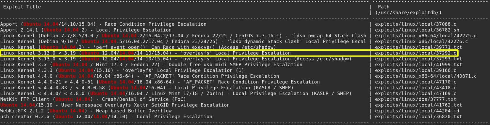

8. Review the searchsploit database installed on the local Kali system
If you don't have installed explotir-db do it with the following command.
$ apt update
&&
apt -y
install
exploitdb
Search an exploit.
$ searchsploit ubuntu 14.04
Output:

Index